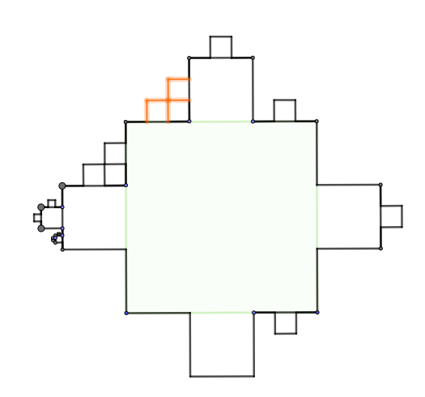

1 Γεωμετρική πρόοδος
1.1 Τι είναι μια γεωμετρική πρόοδος
Γεωμετρική πρόοδος ονομάζεται μια ακολουθία \((\alpha_\nu)\) στην οποία κάθε όρος της, με εξαίρεση τον πρώτο, προκύπτει από τον προηγούμενό του με πολλαπλασιασμό του ίδιου πάντοτε μη μηδενικού αριθμού \(\lambda\).
1.1.1 Θεωρία και Ορισμοί
Ο λόγος (\(\lambda\)): Ο σταθερός αριθμός \(\lambda\) ονομάζεται λόγος της γεωμετρικής προόδου και δίνεται από τον τύπο \(\lambda = \dfrac{\alpha_{\nu+1}}{\alpha_\nu}\).
Αναδρομικός τύπος: Η σχέση που συνδέει δύο διαδοχικούς όρους είναι \(\alpha_{\nu+1} = \alpha_\nu \cdot \lambda\).
Γενικός (ν-οστός) όρος: Ο τύπος που επιτρέπει τον υπολογισμό οποιουδήποτε όρου \(\alpha_\nu\) της προόδου, αν γνωρίζουμε τον πρώτο όρο \(\alpha_1\) και τον λόγο \(\lambda\), είναι ο \(\alpha_\nu = \alpha_1 \cdot \lambda^{\nu-1}\).
Γεωμετρικός Μέσος: Τρεις αριθμοί \(\alpha, \beta, \gamma\) είναι διαδοχικοί όροι γεωμετρικής προόδου αν και μόνο αν ισχύει η σχέση \(\beta^2 = \alpha \cdot \gamma\). Ο θετικός αριθμός \(\sqrt{\alpha\gamma}\) ονομάζεται γεωμετρικός μέσος των \(\alpha\) και \(\gamma\).
Άθροισμα ν πρώτων όρων (\(S_\nu\)):
- Αν \(\lambda \neq 1\), τότε \(S_\nu = \alpha_1 \dfrac{\lambda^\nu - 1}{\lambda - 1}\).
- Αν \(\lambda = 1\) (σταθερή πρόοδος), τότε \(S_\nu = \nu \cdot \alpha_1\).
1.2 Παραδείγματα διαφόρων περιπτώσεων
- Εύρεση όρου: Στη γεωμετρική πρόοδο \(3, 6, 12, \dots\) έχουμε \(\alpha_1 = 3\) και \(\lambda = 6/3 = 2\). Για να βρούμε τον 8ο όρο: \(\alpha_8 = 3 \cdot 2^{8-1} = 3 \cdot 2^7 = 384\).
- Εύρεση παραμέτρου: Για να αποτελούν οι αριθμοί \(x-2, 2x, 7x+4\) διαδοχικούς όρους γεωμετρικής προόδου, πρέπει \((2x)^2 = (x-2)(7x+4)\). Από τη λύση της εξίσωσης \(3x^2 - 10x - 8 = 0\) προκύπτει \(x = 4\).
- Υπολογισμός αθροίσματος: Στην πρόοδο \(1, 3, 9, \dots, 19683\) έχουμε \(\alpha_1 = 1\) και \(\lambda = 3\). Για να βρούμε το άθροισμα, βρίσκουμε πρώτα το πλήθος των όρων: \(19683 = 1 \cdot 3^{\nu-1} \implies 3^9 = 3^{\nu-1} \implies \nu = 10\). Τότε \(S_{10} = \dfrac{3^{10} - 1}{3-1} = 29524\).
- Πρόβλημα εφαρμογής: Σε ένα τουρνουά τένις με 512 παίκτες (νοκ άουτ), ο αριθμός των παικτών που συνεχίζουν ακολουθεί γεωμετρική πρόοδο με \(\alpha_1 = 512\) και \(\lambda = 1/2\). Ο παίκτης που φτάνει στον τελικό (όπου μένουν 2 παίκτες, άρα \(\alpha_\nu = 2\)) έχει δώσει συνολικά 9 αγώνες.
Ο τύπος του γενικού (ν-οστού) όρου μιας γεωμετρικής προόδου, \(\alpha_\nu = \alpha_1 \cdot \lambda^{\nu-1}\), προκύπτει από τον ορισμό της προόδου μέσω της μεθόδου του πολλαπλασιασμού κατά μέλη των αναδρομικών της σχέσεων.
Σύμφωνα με τον ορισμό, κάθε όρος της προόδου προκύπτει από τον προηγούμενό του με πολλαπλασιασμό επί τον σταθερό λόγο \(\lambda\).
Έτσι, μπορούμε να γράψουμε τις παρακάτω διαδοχικές ισότητες:
* \(\alpha_2 = \alpha_1 \cdot \lambda\)
* \(\alpha_3 = \alpha_2 \cdot \lambda\)
* \(\alpha_4 = \alpha_3 \cdot \lambda\)
* …
* \(\alpha_{\nu-1} = \alpha_{\nu-2} \cdot \lambda\)
* \(\alpha_\nu = \alpha_{\nu-1} \cdot \lambda\).
Συνολικά έχουμε \(\nu-1\) τέτοιες ισότητες.
Αν τις πολλαπλασιάσουμε κατά μέλη, προκύπτει η εξής σχέση:
\(\alpha_2 \cdot \alpha_3 \cdot \alpha_4 \cdot \dots \cdot \alpha_\nu = (\alpha_1 \cdot \alpha_2 \cdot \alpha_3 \cdot \dots \cdot \alpha_{\nu-1}) \cdot (\lambda \cdot \lambda \cdot \dots \cdot \lambda)\),.
Στο δεξιό μέλος της εξίσωσης, ο λόγος \(\lambda\) εμφανίζεται ως παράγοντας \(\nu-1\) φορές, γεγονός που συμβολίζεται ως \(\lambda^{\nu-1}\).
Παρατηρούμε ότι οι όροι \(\alpha_2, \alpha_3, \dots, \alpha_{\nu-1}\) εμφανίζονται και στα δύο μέλη του γινομένου.
Εφόσον οι όροι της προόδου είναι μη μηδενικοί, μπορούμε να τους απλοποιήσουμε (να τους διαγράψουμε),.
Μετά την απλοποίηση, στο αριστερό μέλος απομένει μόνο ο όρος \(\alpha_\nu\) και στο δεξιό μέλος το γινόμενο \(\alpha_1 \cdot \lambda^{\nu-1}\). Έτσι, καταλήγουμε στον τύπο του γενικού όρου: \(\alpha_\nu = \alpha_1 \cdot \lambda^{\nu-1}\).
Ο τύπος αυτός είναι ιδιαίτερα χρήσιμος διότι επιτρέπει τον υπολογισμό οποιουδήποτε όρου της προόδου αν γνωρίζουμε μόνο τον πρώτο όρο \(\alpha_1\) και τον λόγο \(\lambda\), χωρίς να χρειάζεται να βρούμε όλους τους ενδιάμεσους όρους.
Σε μια γεωμετρική πρόοδο με πρώτο όρο \(\alpha_1\) και λόγο \(\lambda\), το άθροισμα υπολογίζεται ως εξής:
Αν \(\lambda \neq 1\): \(S_\nu = \alpha_1 \dfrac{\lambda^\nu - 1}{\lambda - 1}\).
Αν \(\lambda = 1\) (σταθερή πρόοδος): \(S_\nu = \nu \cdot \alpha_1\).
Πώς προκύπτει ο τύπος (για \(\lambda \neq 1\)):
Χρησιμοποιούμε τη σχέση \(S_\nu = \alpha_1 + \alpha_1\lambda + \alpha_1\lambda^2 + \dots + \alpha_1\lambda^{\nu-1}\) (1). Πολλαπλασιάζουμε και τα δύο μέλη της (1) με τον λόγο \(\lambda\): \(\lambda S_\nu = \alpha_1\lambda + \alpha_1\lambda^2 + \dots + \alpha_1\lambda^\nu\) (2).
Αφαιρώντας την (1) από την (2) κατά μέλη, οι ενδιάμεσοι όροι διαγράφονται και μένει: \(\lambda S_\nu - S_\nu = \alpha_1\lambda^\nu - \alpha_1 \implies S_\nu(\lambda - 1) = \alpha_1(\lambda^\nu - 1)\). Λύνοντας ως προς \(S_\nu\), καταλήγουμε στον τύπο: \(S_\nu = \alpha_1 \frac{\lambda^\nu - 1}{\lambda - 1}\).
Εναλλακτικά, ο τύπος μπορεί να προκύψει από τη γνωστή ταυτότητα \(\lambda^\nu - 1 = (\lambda - 1)(\lambda^{\nu-1} + \lambda^{\nu-2} + \dots + 1)\), πολλαπλασιάζοντας με \(\alpha_1\).
1.3 Ασκήσεις
Να βρείτε τον 7ο όρο της γεωμετρικής προόδου \(2, 6, 18, \dots\).
Να βρείτε τον 10ο όρο της γεωμετρικής προόδου \(1, -2, 4, \dots\).
Σε γεωμετρική πρόοδο ισχύει \(\alpha_4 = 125\) και \(\alpha_{10} = 125/64\). Να βρεθεί ο 14ος όρος.
Να βρείτε τον πρώτο όρο \(\alpha_1\) μιας προόδου αν ο 5ος όρος είναι \(32/3\) και ο λόγος \(\lambda = 2\).
Να βρείτε τον λόγο \(\lambda\) μιας γεωμετρικής προόδου αν \(\alpha_3 = 12\) και \(\alpha_6 = 96\).
Να προσδιορίσετε το \(x\) ώστε οι αριθμοί \(x, x+1, x+3\) να είναι διαδοχικοί όροι γεωμετρικής προόδου.
Για ποια τιμή του \(x\) οι αριθμοί \(x+4, 2-x, 6-x\) αποτελούν διαδοχικούς όρους γεωμετρικής προόδου;.
Να βρεθεί ο \(x\) ώστε οι αριθμοί \(x, 2x+1, 5x+4\) να είναι διαδοχικοί όροι γεωμετρικής προόδου.
Να υπολογίσετε το άθροισμα \(2 + 8 + 32 + \dots + 8192\).
Να βρείτε το άθροισμα των 10 πρώτων όρων της προόδου \(1, -2, 4, \dots\).
Το άθροισμα των \(\nu\) πρώτων όρων μιας ακολουθίας είναι \(S_\nu = 2(3^\nu - 1)\). Να δείξετε ότι είναι γεωμετρική πρόοδος και να βρείτε τον \(\alpha_1\) και τον \(\lambda\).
Σε γεωμετρική πρόοδο το άθροισμα των 4 πρώτων όρων είναι 15 και των 8 πρώτων όρων είναι 255. Βρείτε τον \(\alpha_1\) και τον \(\lambda\).
Να παρεμβάλετε 4 γεωμετρικούς ενδιάμεσους μεταξύ των αριθμών 5 και 160.
Αν ένα κύτταρο διασπάται κάθε μέρα σε δύο, πόσα κύτταρα θα υπάρχουν μετά από 10 μέρες αν ξεκινήσουμε από ένα;.
Αν οι \(\alpha, \beta, \gamma\) είναι διαδοχικοί όροι γεωμετρικής προόδου, να αποδείξετε ότι και οι \(\alpha^2, \beta^2, \gamma^2\) είναι επίσης διαδοχικοί όροι γεωμετρικής προόδου.
Μεταβολή προόδου με πρόσθεση: Τρεις αριθμοί είναι διαδοχικοί όροι αριθμητικής προόδου και έχουν άθροισμα 15. Αν στους αριθμούς αυτούς προσθέσουμε τους αριθμούς 1, 4 και 19 αντίστοιχα, αυτοί γίνονται διαδοχικοί όροι γεωμετρικής προόδου. Να βρεθούν οι αρχικοί αριθμοί.
Μεταβολή προόδου με αύξηση όρου: Τρεις αριθμοί \(x, y, \omega\) αποτελούν διαδοχικούς όρους γεωμετρικής προόδου και έχουν άθροισμα 28. Αν ο μεσαίος όρος αυξηθεί κατά 2, τότε οι αριθμοί που προκύπτουν είναι διαδοχικοί όροι αριθμητικής προόδου. Να βρεθούν οι \(x, y, \omega\).
Συνδυασμός τεσσάρων όρων: Να βρείτε τέσσερις ακέραιους αριθμούς για τους οποίους ισχύουν συγχρόνως τα εξής:
- α. οι τρεις πρώτοι είναι διαδοχικοί όροι γεωμετρικής προόδου,
- β. οι τρεις τελευταίοι είναι διαδοχικοί όροι αριθμητικής προόδου,
- γ. το άθροισμα των άκρων όρων είναι 14 και των μεσαίων 12.
- Ακολουθία τεσσάρων όρων: Οι αριθμοί \(\alpha, \beta, \gamma, \delta\) είναι διαδοχικοί όροι αριθμητικής προόδου και οι αριθμοί \(\alpha, \beta-3, \gamma-5, \delta-5\) είναι διαδοχικοί όροι γεωμετρικής προόδου. Να βρεθούν οι \(\alpha, \beta, \gamma, \delta\).
- Εύρεση παραμέτρου x:
- α. Αν οι αριθμοί \(4-x, x, 2\) είναι διαδοχικοί όροι αριθμητικής προόδου, να προσδιορίσετε τον \(x\).
- β. Αν οι ίδιοι αριθμοί είναι διαδοχικοί όροι γεωμετρικής προόδου, να προσδιορίσετε τον \(x\).
- γ. Υπάρχει τιμή του \(x\) ώστε να είναι ταυτόχρονα όροι αριθμητικής και γεωμετρικής προόδου;
- Αριθμητικός και Γεωμετρικός μέσος: Δύο αριθμοί έχουν αριθμητικό μέσο 10 και γεωμετρικό μέσο 8.
- α. Να βρείτε τους αριθμούς αυτούς.
- β. Αν ο μικρότερος είναι ο 4ος όρος και ο μεγαλύτερος ο 6ος όρος μιας γεωμετρικής προόδου \((\alpha_\nu)\), βρείτε τον \(\alpha_1\) και τον \(\lambda\).
- γ. Αν ο μικρότερος είναι ο 5ος και ο μεγαλύτερος ο 9ος όρος μιας αριθμητικής προόδου \((\beta_\nu)\), βρείτε τον \(\beta_1\) και τη διαφορά \(\omega\).
- Απόδειξη σχέσης: Αν οι αριθμοί \(2\alpha\beta, \beta^2, \gamma^2\) είναι διαδοχικοί όροι αριθμητικής προόδου, να αποδείξετε ότι οι αριθμοί \(\beta, \gamma, 2\beta - \alpha\) αποτελούν διαδοχικούς όρους γεωμετρικής προόδου.
- Ταυτόχρονη ιδιότητα: Αν οι αριθμοί \(\alpha, \beta, \gamma\) είναι ταυτόχρονα διαδοχικοί όροι αριθμητικής και γεωμετρικής προόδου, να αποδείξετε ότι \(\alpha = \beta = \gamma\).
- Σύγκριση αθροίσματος και όρου: Δίνονται η αριθμητική πρόοδος \((\alpha_\nu): 2, 5, 8, 11, \dots\) και η γεωμετρική πρόοδος \((\beta_\nu): 2, 4, 8, 16, \dots\). Να βρείτε την τιμή του \(\nu\) ώστε για το άθροισμα \(S_\nu\) των \(\nu\) πρώτων όρων της \((\alpha_\nu)\) να ισχύει η σχέση: \(2(S_\nu + 24) = \beta_7\).
- Πρακτικό πρόβλημα (Μυρμήγκι και Αράχνη): Ένα μυρμήγκι κινείται σε κλαδί 1m διανύοντας αποστάσεις που αποτελούν αριθμητική πρόοδο \((\alpha_1=1cm, \omega=2cm)\). Ταυτόχρονα, μια αράχνη ξεκινά από το άλλο άκρο διανύοντας αποστάσεις που αποτελούν γεωμετρική πρόοδο \((\beta_1=1cm, \lambda=2)\). Σε πόσα λεπτά θα βρεθούν αντιμέτωπα σε απόσταση 1cm;
Λύση
α) Αποστάσεις Μυρμηγκιού (Αριθμητική Πρόοδος)
Το μυρμήγκι διανύει 1 cm το πρώτο λεπτό και κάθε επόμενο λεπτό διανύει 2 cm περισσότερα από το προηγούμενο.
Πρώτος όρος: \(\alpha_1 = 1\).
Διαφορά: \(\omega = 2\).
Γενικός όρος: \(\alpha_\nu = \alpha_1 + (\nu - 1)\omega = 1 + (\nu - 1)2 = 1 + 2\nu - 2 \Rightarrow\) \(\alpha_\nu = 2\nu - 1\).
β) Συνολική απόσταση στα πρώτα 5 λεπτά
Για να βρούμε την απόσταση που κάλυψε το μυρμήγκι στα πρώτα 5 λεπτά, υπολογίζουμε το άθροισμα \(S_5\):
\(S_\nu = \dfrac{\nu}{2} [2\alpha_1 + (\nu - 1)\omega]\)
\(S_5 = \dfrac{5}{2} [2(1) + (5 - 1)2] = \frac{5}{2} [2 + 8] = \frac{5}{2}(10) \Rightarrow\) \(S_5 = 25 \text{ cm}\).
γ) Χρόνος για να φτάσει στο άλλο άκρο
Το μυρμήγκι θα φτάσει στο άλλο άκρο όταν το συνολικό άθροισμα των αποστάσεων \(S_\nu\) γίνει ίσο με το μήκος του κλαδιού (100 cm).
\(S_\nu = 100 \Rightarrow \dfrac{\nu}{2} [1 + (2\nu - 1)] = 100\) (χρησιμοποιώντας τον τύπο \(S_\nu = \dfrac{\nu(\alpha_1 + \alpha_\nu)}{2}\)).
\(\dfrac{\nu(2\nu)}{2} = 100 \Rightarrow \nu^2 = 100 \Rightarrow\) \(\nu = 10 \text{ λεπτά}\).
δ) Κίνηση Αράχνης και Συνάντηση
i) Αποστάσεις Αράχνης (Γεωμετρική Πρόοδος):
Η αράχνη ξεκινά από το άλλο άκρο και κάθε λεπτό διανύει διπλάσια απόσταση από το προηγούμενο (1, 2, 4, …).
Πρώτος όρος: \(\beta_1 = 1\).
Λόγος: \(\lambda = 2\).
Γενικός όρος: \(\beta_\nu = \beta_1 \cdot \lambda^{\nu-1} = 1 \cdot 2^{\nu-1} \Rightarrow\) \(\beta_\nu = 2^{\nu-1}\).
ii) Χρόνος Συνάντησης σε απόσταση 1 cm:
Θέλουμε να βρούμε το \(\nu\) ώστε η απόσταση που διάνυσε το μυρμήγκι (\(S_\nu\)) και η απόσταση που διάνυσε η αράχνη (\(S'_\nu\)) μαζί με το 1 cm που τα χωρίζει να ισούται με 100 cm.
\(S_\nu + S'_\nu + 1 = 100 \Rightarrow S_\nu + S'_\nu = 99\).
Γνωρίζουμε ότι \(S_\nu = \nu^2\) (από το ερώτημα γ) και \(S'_\nu = \beta_1 \frac{\lambda^\nu - 1}{\lambda - 1} = 1 \frac{2^\nu - 1}{2 - 1} = 2^\nu - 1\).
Η εξίσωση γίνεται: \(\nu^2 + (2^\nu - 1) = 99 \Rightarrow \nu^2 + 2^\nu = 100\).
Δοκιμάζοντας τιμές για το \(\nu\):
- Για \(\nu=6\): \(6^2 + 2^6 = 36 + 64 = 100\).
Άρα, το μυρμήγκι και η αράχνη θα βρεθούν αντιμέτωπα σε απόσταση 1 cm σε 6 λεπτά.
- Να προσδιορίσετε τον τύπο του \(n\)-οστού όρου (\(\alpha_{\nu}\)) για τις παρακάτω γεωμετρικές προόδους:
- α. \(5, 10, 20, \dots\)
- β. \(7, 21, 63, \dots\)
- γ. \(100, 50, 25, \dots\)
- δ. \(\dfrac{1}{3}, \dfrac{1}{9}, \dfrac{1}{27}, \dots\)
- Να υπολογίσετε τον όρο που ζητείται σε κάθε περίπτωση:
- α. Τον \(8^o\) όρο της προόδου \(1, 3, 9, \dots\)
- γ. Τον \(7^o\) όρο της προόδου \(64, 32, 16, \dots\)
- δ. Τον \(12^o\) όρο της προόδου με \(\alpha_1 = 2\) και λόγο \(\lambda = -1\).
- Εύρεση πρώτου όρου
- α. Σε μια γεωμετρική πρόοδο, ο \(6^{os}\) όρος είναι ίσος με \(486\) και ο λόγος της είναι \(\lambda = 3\). Να βρείτε τον πρώτο όρο \(\alpha_1\).
- β. Αν ο \(4^{os}\) όρος μιας προόδου είναι \(\dfrac{5}{8}\) και ο λόγος είναι \(\lambda = \dfrac{1}{2}\), να βρεθεί ο \(\alpha_1\).
- Εύρεση λόγου
- α. Να βρεθεί ο λόγος \(\lambda\) μιας γεωμετρικής προόδου για την οποία ισχύει \(\alpha_2 = 10\) και \(\alpha_5 = 80\).
- β. Ο \(3^{os}\) όρος μιας προόδου είναι \(18\) και ο \(5^{os}\) όρος είναι \(162\). Να βρεθούν οι δυνατές τιμές του λόγου \(\lambda\).
- Σχέση μεταξύ όρων Να υπολογίσετε:
- α. Τον όρο \(\alpha_{12}\) μιας γεωμετρικής προόδου, αν γνωρίζετε ότι \(\alpha_3 = 12\) και \(\alpha_6 = 96\).
- β. Τον όρο \(\alpha_{15}\) αν \(\alpha_5 = 4\) και \(\alpha_{10} = 128\).
Πλήθος όρων Δίνεται η γεωμετρική πρόοδος \(2, 6, 18, \dots\). Ποια είναι η θέση του όρου που έχει τιμή \(1.458\); (Δηλαδή, βρείτε το \(\nu\) ώστε \(\alpha_{\nu} = 1.458\)).
Όρια τιμών
- α. Ποιος είναι ο πρώτος όρος της γεωμετρικής προόδου \(5, 10, 20, \dots\) που ξεπερνάει το \(1.000\);
- β. Σε μια πρόοδο με \(\alpha_1 = 1.000\) και \(\lambda = 0,5\), ποιος είναι ο πρώτος όρος που είναι μικρότερος από τη μονάδα (\(1\));
- Γεωμετρικός μέσος και μεταβλητές
- α. Να βρείτε τον γεωμετρικό μέσο των αριθμών \(4\) και \(36\).
- β. Για ποια τιμή του \(x\) οι αριθμοί \(x-3, x+1\) και \(4x-2\) αποτελούν διαδοχικούς όρους γεωμετρικής προόδου;
- Άθροισμα πρώτων όρων Να υπολογίσετε το άθροισμα των πρώτων \(8\) όρων για τις παρακάτω προόδους:
- α. \(3, 6, 12, \dots\)
- β. \(2, -4, 8, \dots\)
- Υπολογισμός πεπερασμένου αθροίσματος Να βρείτε το αποτέλεσμα των παρακάτω αθροισμάτων:
- α. \(1 + 4 + 16 + \dots + 1.024\)
- β. \(81 + 27 + 9 + \dots + \dfrac{1}{9}\)
Πρόβλημα - Ανάπτυξη πληθυσμού Ένα είδος φυτού σε μια λίμνη τριπλασιάζει την επιφάνεια που καλύπτει κάθε εβδομάδα. Αν την 1η εβδομάδα καλύπτει \(2\) τετραγωνικά μέτρα, πόση επιφάνεια θα καλύπτει μετά από \(6\) εβδομάδες;
Πρόβλημα - Ελαστική κρούση Μια μπάλα πέφτει από ύψος \(81\) μέτρων. Κάθε φορά που χτυπά στο έδαφος, αναπηδά και φτάνει στα \(\dfrac{2}{3}\) του προηγούμενου ύψους της. Σε τι ύψος θα φτάσει κατά την \(5^η\) αναπήδηση;
Απόδειξη Γεωμετρικής Προόδου Ο \(n\)-οστός όρος μιας ακολουθίας δίνεται από τον τύπο \(\alpha_{\nu} = 5^{\nu} \cdot \dfrac{1}{2^{\nu-1}}\). Να αποδείξετε ότι η ακολουθία αυτή είναι γεωμετρική πρόοδος και να προσδιορίσετε τον πρώτο όρο \(\alpha_1\) και τον λόγο \(\lambda\).
Εύρεση Μεταβλητής \(x\) Για ποια τιμή του \(x\) οι αριθμοί \(x-2\), \(\sqrt{3x+1}\) και \(x+6\) είναι διαδοχικοί όροι μιας γεωμετρικής προόδου;
Ιδιότητες Προόδων Να αποδείξετε ότι:
- α. Αν οι όροι μιας γεωμετρικής προόδου \((\alpha_{\nu})\) υψωθούν στον κύβο, τότε η νέα ακολουθία που προκύπτει είναι επίσης γεωμετρική πρόοδος.
- β. Αν πολλαπλασιάσουμε κάθε όρο μιας γεωμετρικής προόδου με μια σταθερά \(c \neq 0\), η ακολουθία παραμένει γεωμετρική πρόοδος.
Σύστημα με Αθροίσματα Να βρείτε μια γεωμετρική πρόοδο για την οποία το άθροισμα των δύο πρώτων όρων είναι \(S_2 = 10\) και το άθροισμα των τεσσάρων πρώτων όρων είναι \(S_4 = 50\).
Σύστημα με Όρους Σε μια γεωμετρική πρόοδο ισχύει ότι \(\alpha_2 + \alpha_4 = 60\) και \(\alpha_3 + \alpha_5 = 180\). Να υπολογίσετε το άθροισμα των πρώτων οκτώ (\(8\)) όρων της προόδου αυτής.
Πληθυσμιακή Μελέτη Ο πληθυσμός μιας πόλης είναι σήμερα \(50.000\) κάτοικοι και αυξάνεται κατά \(3\%\) κάθε χρόνο.
- α. Να βρείτε τον αναδρομικό τύπο και τον γενικό όρο της ακολουθίας που εκφράζει τον πληθυσμό μετά από \(n\) χρόνια.
- β. Πόσους κατοίκους θα έχει η πόλη μετά από \(12\) χρόνια;
- Απόσβεση Αξίας Η αξία ενός μηχανήματος μειώνεται κατά \(15\%\) στο τέλος κάθε έτους χρήσης. Αν η αρχική αξία είναι \(V_0\):
- α. Να βρείτε τον αναδρομικό τύπο και τον γενικό όρο της αξίας \(V_{\nu}\) μετά από \(\nu\) έτη.
- β. Αν η αρχική αξία ήταν \(20.000\) €, ποια θα είναι η αξία του μηχανήματος μετά από \(5\) έτη;
- Φυσική/Ήχος Σε μια πειραματική διάταξη, μια συχνότητα \(f_1 = 100 \text{ Hz}\) διπλασιάζεται μετά από \(10\) ενδιάμεσα στάδια, έτσι ώστε οι \(12\) συνολικά συχνότητες να αποτελούν διαδοχικούς όρους γεωμετρικής προόδου.
- α. Να βρείτε τον λόγο \(\lambda\) της προόδου.
- β. Να υπολογίσετε την τιμή της \(6^{\eta\varsigma}\) συχνότητας.
Λύση
Δεδομένα:
Πρώτος όρος (συχνότητα): \(\alpha_1 = 100 \text{ Hz}\).
Συνολικοί όροι: \(12\) (αφού έχουμε την αρχική, την τελική και \(10\) ενδιάμεσες).
Ο τελευταίος όρος \(\alpha_{12}\) είναι ο διπλάσιος του πρώτου: \(\alpha_{12} = 2 \cdot 100 = 200 \text{ Hz}\).
Εύρεση του λόγου \(\lambda\):
Χρησιμοποιούμε τον τύπο του γενικού όρου της γεωμετρικής προόδου: \[\alpha_{\nu} = \alpha_1 \cdot \lambda^{\nu-1}\] Για \(\nu = 12\) έχουμε: \[\alpha_{12} = \alpha_1 \cdot \lambda^{11}\] \[200 = 100 \cdot \lambda^{11}\] \[2 = \lambda^{11}\] \[\lambda = \sqrt[11]{2}\]
Εύρεση της \(6^{\eta\varsigma}\) συχνότητας (\(\alpha_6\)): \[\alpha_6 = \alpha_1 \cdot \lambda^{6-1}\] \[\alpha_6 = 100 \cdot (\sqrt[11]{2})^5\] \[\alpha_6 = 100 \cdot 2^{\frac{5}{11}}\] (Με χρήση κομπιουτεράκι, \(\alpha_6 \approx 137,01 \text{ Hz}\))
- Διάλυμα/Μίγμα Ένα δοχείο περιέχει \(20 \text{ lt}\) καθαρό οινόπνευμα. Αφαιρούμε \(2 \text{ lt}\) οινοπνεύματος και τα αντικαθιστούμε με \(2 \text{ lt}\) νερό. Ανακατεύουμε και επαναλαμβάνουμε τη διαδικασία.
- α. Να βρείτε τον αναδρομικό τύπο για την ποσότητα του οινοπνεύματος \(C_{\nu}\) μετά από \(\nu\) επαναλήψεις.
- β. Πόσο οινόπνευμα θα υπάρχει στο δοχείο μετά από \(5\) επαναλήψεις;
Λύση
Δεδομένα:
Αρχική ποσότητα: \(20 \text{ lt}\).
Σε κάθε βήμα αφαιρούμε \(2 \text{ lt}\) από τα \(20 \text{ lt}\). Αυτό σημαίνει ότι αφαιρούμε το \(\dfrac{2}{20} = d\frac{1}{10}\) (ή το \(10\%\)) της ποσότητας που υπάρχει εκείνη τη στιγμή.
Άρα, η ποσότητα που απομένει είναι τα \(\dfrac{9}{10}\) (ή το \(90\%\)) της προηγούμενης. Ο λόγος της προόδου είναι \(\lambda = 0,9\).
Αναδρομικός τύπος:
Αν \(C_{\nu}\) είναι η ποσότητα μετά από \(\nu\) επαναλήψεις και \(C_0 = 20\) η αρχική ποσότητα:
\(C_{\nu} = C_{\nu-1} \cdot 0,9\) με \(C_0 = 20\).
Ο γενικός όρος είναι: \(C_{\nu} = 20 \cdot (0,9)^{\nu}\).
Ποσότητα μετά από \(5\) επαναλήψεις (\(C_5\)):
Εφαρμόζουμε τον τύπο για \(\nu = 5\): \[C_5 = 20 \cdot (0,9)^5\]
Ας υπολογίσουμε τη δύναμη: \[0,9^5 = 0,59049\]
Τώρα το γινόμενο: \[C_5 = 20 \cdot 0,59049 = 11,8098 \text{ lt}\]
Απάντηση: Μετά από \(5\) επαναλήψεις, στο δοχείο θα υπάρχουν \(11,8098 \text{ λίτρα}\) οινοπνεύματος.
Ιστορικό Πρόβλημα/Εκθετική Αύξηση Ένας ευεργέτης αποφασίζει να δωρίσει χρήματα για \(15\) ημέρες ως εξής: Την \(1^{\eta}\) ημέρα \(5\) €, τη \(2^{\eta}\) ημέρα \(10\) €, την \(3^{\eta}\) ημέρα \(20\) € και ούτω καθεξής (κάθε μέρα διπλασιάζει το ποσό). Να βρείτε το συνολικό ποσό που θα έχει δωρίσει στο τέλος των \(15\) ημερών.
Γεωμετρικό Fractal Ξεκινάμε με ένα τετράγωνο πλευράς \(1\). Σε κάθε επόμενο στάδιο, χωρίζουμε κάθε πλευρά του σχήματος σε \(3\) ίσα τμήματα και αντικαθιστούμε το μεσαίο τμήμα με δύο πλευρές ενός νέου μικρότερου τετραγώνου (προς τα έξω).

- α. Να βρείτε τον αναδρομικό τύπο για το πλήθος των πλευρών \(P_{\nu}\) του σχήματος.
- β. Να βρείτε τον γενικό όρο για την περίμετρο \(L_{\nu}\) του σχήματος στο στάδιο \(\nu\). Τι παρατηρείτε για την περίμετρο καθώς το \(\nu\) μεγαλώνει πολύ;
ΚΑΛΗ ΜΕΛΕΤΗ!